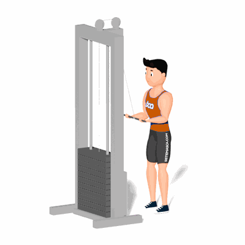

Tríceps Inverso na Polia

É um ótimo exercício para isolar o tríceps e dar ênfase a cabeça lateral do músculo. Além disso, a mudança na pegada dificulta o uso de músculos secundários, o que faz o tríceps tenha que realizar mais trabalho.
Ficha Técnica
Tipo: Musculação
Grupo Muscular: Tríceps
Aparelho: Nenhum
Músculos: Nenhum
Como realizar
- Posicione-se de frente para um aparelho de cabo configurado na posição alta;
- Segure a barra reta com uma pegada supinada;
- Traga os cotovelos para as laterais de forma que os antebraços fiquem paralelos ao chão;
- Mantendo os cotovelos na mesma posição, estenda os antebraços para baixo contraindo os tríceps;
- Retorne a barra até a posição inicial.
 RC STORE
RC STORE